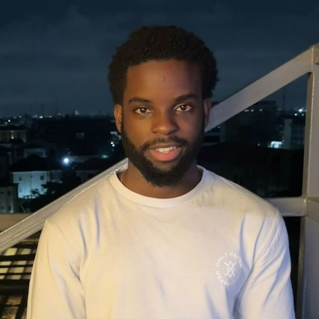
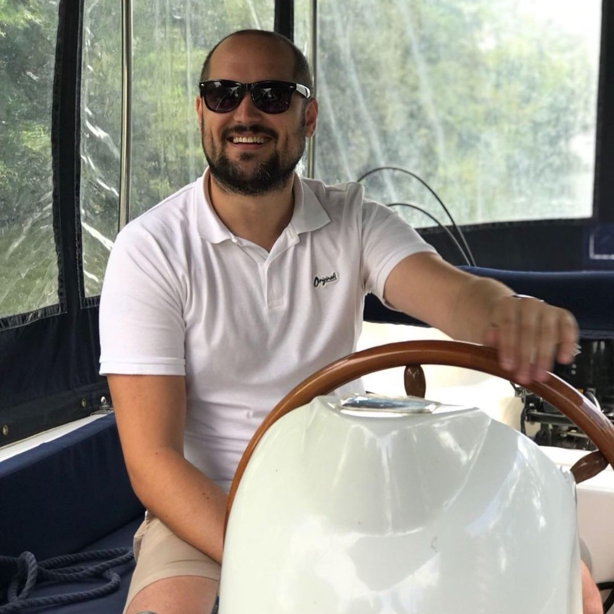
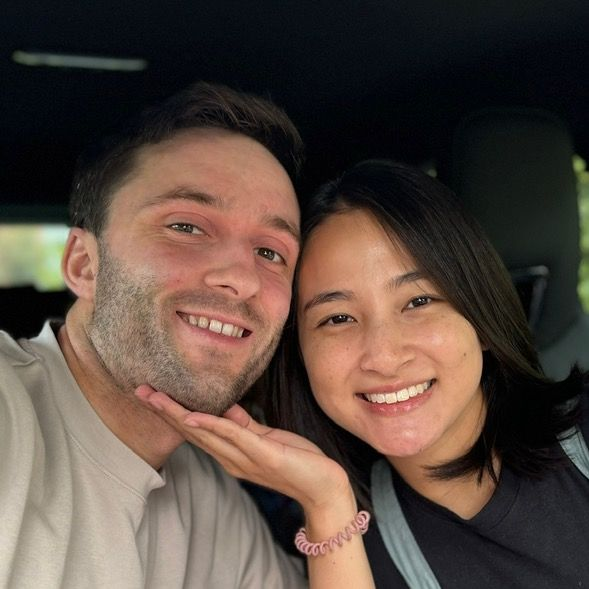

A 90M cold-wallet hack, boring regulated ETNs, and the core and satellite rule
← Blog Crypto Investing
A cold wallet holding 90 million dollars was drained last week, and the coins were not sitting on an exchange. They were in private custody, behind a private key, protected by everything the textbooks recommend, and they still vanished. 
Lupes
I know everyone has moved on and forgotten about crypto, but an absolute madness happened last week. I am talking a 90 million dollar heist. And the worst thing is that the Bitcoin was not even sitting on an exchange. Now, I first got into crypto about six years ago, and if there is one phrase that I kept hearing, it was not your keys, not your crypto.
Watch on TikTok (110,016 views, 9,963 likes). His most watched crypto video, with viewers sharing their own cold storage setups in the comments.
Lupes is worth hearing on crypto precisely because he is sceptical of hype everywhere else. His ETF videos draw hundreds of thousands of views. His zero percent finance clip passed 83,000. When a man whose brand is boring index funds tells you a 90 million dollar cold wallet heist just happened, the warning lands differently than when it comes from a perma bear. He knows the private key mantra by heart, a key is just a massive string of random numbers, and his point is that even people who follow the rules can lose everything. The technology is unforgiving in a way that index funds simply are not.
His actual investment prescription, delivered in a video watched nearly 97,000 times, is that ETFs are the entire game and everything else is entertainment. He will never stop raving about their benefits, he says, and if he is no longer investing in ETFs it means he is no longer investing at all. The crypto allocation that survives this worldview is small by design, a satellite around a core of whole market funds, and anyone inverting that ratio has misunderstood which asset pays the bills.
I will never stop raving about the benefits of ETF investing. In fact, if I am no longer investing in ETFs, it means I am no longer investing, period. Everybody is heading towards an individual stock portfolio. Fair enough. We are all geniuses. I just saw Palantir go up 30 percent in a day. You are not getting that with an ETF.
Watch on TikTok (96,646 views, 10,066 likes). He concedes the thrill of single stocks, then shows why the base stays in funds.

Mark
For the past 35 weeks, I have been investing 10 pounds every single week into a new company based on a letter of the alphabet. For the first half of the year, I have tracked all 26 investments into a pie on Trading 212. I would have invested 260 pounds. Currently at 291 and 48.
Watch on TikTok (2,906 views). His alphabet investing series turns stock picking into a 10 pound weekly lesson.

Bret and Evey
We started taking investing seriously seven years ago and we have since built up a 500,000 pound portfolio. Number one is having two incomes, but living off of just one. At the beginning, your income is your most powerful asset.
Watch on TikTok (1,222 views). Their three lever breakdown is the calmest wealth video on this page.
Then  Krish Kara supplies the rule that governs all of it. In a video watched nearly 35,000 times, he names the most expensive sentence in investing, it is too high, and shows that 10,000 pounds in the S and P 500 a decade ago is 35,000 today with no timing at all, while missing just the ten best days cuts the outcome nearly in half. Crypto traders live and die by timing. Krish shows that timing is the tax you pay for excitement.
Krish Kara supplies the rule that governs all of it. In a video watched nearly 35,000 times, he names the most expensive sentence in investing, it is too high, and shows that 10,000 pounds in the S and P 500 a decade ago is 35,000 today with no timing at all, while missing just the ten best days cuts the outcome nearly in half. Crypto traders live and die by timing. Krish shows that timing is the tax you pay for excitement.
Krish Kara
The most expensive word in investing is it is too high. 10,000 pounds fully invested in the S and P 500 ten years ago is worth 35,000 today. No timing the market, no trying to catch the bottom. Just investing regularly. If you miss just the 10 best days, your 10,000 only grows to 18,500.
Watch on TikTok (34,800 views). His most watched video, and the one crypto curious viewers need most.
Where they agree, and where they split, is the question of whether crypto belongs at all. Lupes keeps a seat for it, small, cold stored, and intellectually honest about the risks, while his core stays in ETFs. Bret and Evey never mention it across a half million pound build. Krish ignores it while preaching time in the market. Mark dabbles in single stocks at 10 pounds a week, which is speculation with training wheels. The consensus, stated and implied, is a spectrum rather than a ban. If crypto is your entertainment budget, sized so a total loss changes nothing, filmed with cold storage and honest accounting, it can exist. If it is your plan, the 90 million dollar heist is your warning label.
The takeaway fits on a cold wallet label. Build the ETF core first, Lupes holds his in funds and preaches them to 100,000 viewers at a time. Cap any crypto allocation so its disappearance would bore rather than ruin you. Custody it properly, keys offline, exchanges distrusted, and even then accept that proper custody failed someone for 90 million dollars last week. Bret and Evey reached 500,000 pounds without a single coin. That fact does not make crypto worthless. It makes it optional, which is exactly what a side bet should be.
Bret and Evey and Evey complete the risk picture with a confession that surprises viewers. For all their ETF preaching today, they disclose that early on, with no kids and high risk capacity, they made decent returns from individual stocks and crypto, before deliberately rotating toward funds as the portfolio grew. The admission, in the same video as their half million reveal, is doing careful work. Risk was a phase with a purpose, sized to their circumstances, then retired when circumstances changed.
We realised that we could afford to take risks with our investments. At the time we did not have kids, so we were not only investing in ETFs. We have made decent returns from individual stocks and crypto over the years, however we do now tend to lean more towards ETFs. Number three is how we are protecting it going forward, specifically from tax.
Watch on TikTok (1,222 views). Their risk phase disclosure, paired with tax wrapper protection as the mature stage.
The lifecycle matters more than any single position. Young, childless, dual income, they could afford experiments. Older, wealthier, with more to protect, they wrap everything in ISAs and pensions and buy the whole market. Lupes would recognise the pattern, his own crypto allocation is the same kind of satellite, sized to survive total loss. The lesson is not that risk is forbidden but that it has a season, and the season ends when the portfolio becomes the plan rather than the experiment.
Mark still posts his 10 pound alphabet investments every Monday, Bret and Evey still buy the whole market monthly, Krish still warns that missing the ten best days halves your gains, and Lupes still opens every crypto video with the heist. Four creators, four temperaments, one portfolio shape. Core in funds, satellite in speculation, keys offline, expectations low. The market pays you for patience. Crypto charges you for excitement. Pay the right one.
Nothing on this page constitutes financial advice. Figures quoted are self-described by each creator in their own TikTok videos, linked so you can check the source yourself.
Net worth figures are self-described by each creator in their own TikTok content and have not been independently verified. Nothing on this site constitutes financial advice. © 2026 SaveShare.io